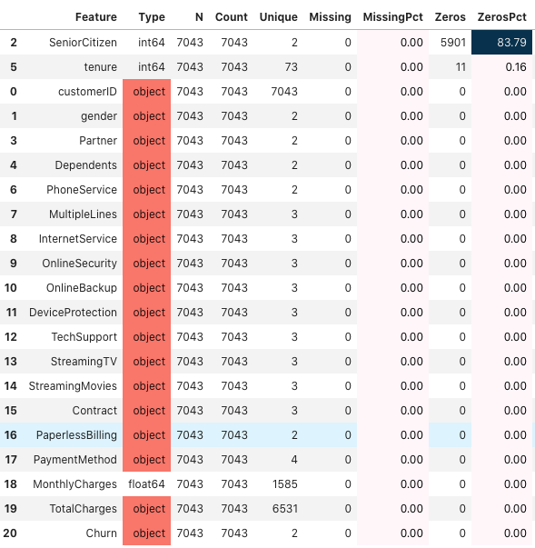

In this project I used the Kaggle Customer Churn data to determine whether the customer will churn (leave the company) or not. I split the kaggle training data into train and test (80%/20%) and fitted the models using train data and evaluated model results in test data.
I used mainly the semi automatic learning module pycaret for this project.
I also used usual boosting modules (xgboost,lightgbm,catboost) and regular
sklearn models.
In real life the cost of misclassifying leaving customer and not-leaving customer is different. In this project I defined the PROFIT metric as following:
profit = +$400 for TP : incentivize the customer to stay, and sign a new contract.
profit = 0 for TN : nothing is lost
profit = -$100 for FP : marketing and effort used to try to retain the user
profit = -$200 for FN : revenue lost from losing a customer
TP = true positive
FP = false positive
FN = false negative
After testing various models with extensive feature engineering, I found that the xgboost algorithm gave the best profit.

TotalCharges with 0.SeniorCitizen + Dependents.TotalCharges per Contract.yeo-johnson transformers instead of standard scaling since the numerical features were not normal. Accuracy Precision Recall F1-score AUC
LR 0.4450 0.3075 0.8717 0.4547 0.5812
Predicted
Predicted-noChurn Predicted-Churn 0 1
Original no-Churn [[301 734] TN FP
Original Churn [ 48 326]] FN TP
Let's make following assumptions
TP = +$400
TN = 0
FP = -$100
FN = -$200
profit = tn*0 + fp*(-100) + fn*(-200) + tp*400
= 400*tp - 200*fn - 100*fp
tn,fp,fn,tp = confusion_matrix(y_true,y_pred)
LAST+ 2ndrow 1strow
profit = 400*326 - 200*48 - 100*734
= 47400
============================ LogisticRegressoinCV======================
Accuracy Precision Recall F1-score AUC
LRCV 0.7367 0.5024 0.8396 0.6286 0.7695
[[724 311]
[ 60 314]]
profit = 82,500
--------------------------------- xgboost -------------------------------
Accuracy Precision Recall F1-score AUC
xgboost 0.7097 0.4749 0.8850 0.6181 0.7657
[[669 366]
[ 43 331]]
Profit = $87,200
--------------------------------- lightgbm ------------------------------
Accuracy Precision Recall F1-score AUC profit
lgb+hyperband 0.7069 0.4651 0.6952 0.5573 0.7031 $51,300
lgb+hyperopt 0.64088 0.419903 0.925134 0.577629 0.731649 $85,000
I did a lot of hyperparameter tuning of lgb with hyperopt for multiple days.
I got following results
5-foldCV TestProfit
params_lgb1 68,900 83,000
params_lgb2 69,340 82,700
params_lgb3 69,420 87,900 ** This has largest test profit, but less cv
params_lgb4 69,480 85,000 ** We never see the test data, we only see train data
So, we must choose the parameters with highest cross validation score.
Here params_lgb4 gives higher profit than params3, this means it is possible to
get higher score but we need to get it along with higher validation score.
We can try about 10k hyperopt trials but so far I have tried only upto 5k trials.
Note about hyperopt:
When I dumped the hyperopt trial to a file and load again and used in hyperopt
then, it gave me the same results in microseconds even if I run further thousands
of trials. This means using old trials does not work. Always use new trials but
we can pickle dump it so that we can see the trials history.
--------------------------------- catboost -------------------------------
Accuracy Precision Recall F1-score AUC
catboost+optuna 0.6955 0.4618 0.8877 0.6075 0.7569
[[648 387]
[ 42 332]]
profit = $85,700
MCC and LogLoss.tune-sklearn algorithm to tune logistic regression.

Pycaret Logistic Regression
==============================================================
Accuracy Precision Recall F1-score AUC
pycaret_lr 0.7509 0.5199 0.8021 0.6309 0.7673
[[758 277]
[ 74 300]]
profit = 400*300 - 200*74 - 100*277
= 77,500
Pycaret Naive Bayes
==============================================================
Accuracy Precision Recall F1-score AUC
pycaret_nb 0.7296 0.4943 0.8102 0.6140 0.7553
[[725 310]
[ 71 303]]
profit = 400*303 - 200*71 - 100*310
= 76,000
Pycaret Xgboost (Takes long time, more than 1 hr)
===============================================================
Accuracy Precision Recall F1-score AUC
pycaret_xgboost 0.7601 0.5342 0.7513 0.6244 0.7573
[[790 245]
[ 93 281]]
profit = 400*281 - 200*93 - 100*245
= 69,300
Pycaret LDA (Takes medium time, 5 minutes)
================================================================
- Used polynomial features and fix imbalanced data.
Accuracy Precision Recall F1-score AUC
pycaret_lda 0.7062 0.4704 0.8503 0.6057 0.7522
[[677 358]
[ 56 318]]
profit = 400*318 - 200*56 - 100*358
= 80,200
Accuracy Precision Recall F1-score AUC
evalml 0.7977 0.6369 0.5535 0.5923 0.7197
[[917 118]
[167 207]]
profit = 400*207 - 200*167 - 100*118
= 37,600
customerID and gender.TotalCharges with 0.class_weight parameter to deal with imbalanced data.GridSearchCVModel parameters
{'activation': 'sigmoid',
'batch_size': 128,
'epochs': 30,
'n_feats': 43,
'units': (45, 30, 15)}
NOTE: The result changes each time even if I set SEED for everything.
Accuracy Precision Recall F1-score AUC
keras 0.6849 0.4422 0.7166 0.5469 0.6950
[[697 338]
[106 268]]
profit = 400*268 - 200*106 - 100*338
= 52,200
This is a imbalanced binary classification.
The useful metrics are F2-score and Recall.
AUC is useful only when dataset is balanced.
F1 is useful when precision and recall is equally important.
Here I defined a custom metric "profit" based on confusion matrix elements.
- Logistic regression cv algorithm gave me the best profit.
- I used custom feature engineering of the data.
- SMOTE oversampling gave worse result than no resampling.
(note: I have used class_weight='balanced')
- Elasticnet penalty gave worse result than l2 penalty.
- Make custom loss scorer instead of default scoring such as f1,roc_auc,recall.
Profit = 400*TP - 200*FN - 100*FP
TP = +$400 ==> incentivize the customer to stay, and sign a new contract.
TN = 0
FP = -$100 ==> marketing and effort used to try to retain the user
FN = -$200 ==> revenue lost from losing a customer
Some Notes about comparing models:
- We should never directly compare test dataset, we may simply overfit the test
data. It's like training test data and overfitting by best hyperparams.
- We should compare validation splits and validation splits must have very small
standard deviation, then, after we get hyperparams from training/validation,
we use these hyperparams to see how it does in test.
We can not change hyperparameter based on test results, but we can change
based on validation results.
- Here I have reported the test profit, but for model comparison we can report
cross-validation profit.
Accuracy Precision Recall F1-score AUC Profit
-------------------------------------------------------------------------------
xgboost 0.7097 0.4749 0.8850 0.6181 0.7657 $87,200
catboost+optuna 0.6955 0.4618 0.8877 0.6075 0.7569 $85,700
lgb+hyperopt 0.64088 0.419903 0.925134 0.577629 0.731649 $85,000
LRCV 0.7367 0.5024 0.8396 0.6286 0.7695 $82,500
pycaret_lda 0.7062 0.4704 0.8503 0.6057 0.752200 $80,200
pycaret_lr 0.750887 0.519931 0.802139 0.630915 0.767253 $77,500
pycaret_nb 0.729595 0.494290 0.810160 0.613982 0.755322 $76,000
pycaret_xgboost 0.760114 0.534221 0.751337 0.624444 0.757311 $69,300
keras 0.684883 0.442244 0.716578 0.546939 0.695004 $52,200
lgb+hyperband 0.7069 0.4651 0.6952 0.5573 0.7031 $51,300
LR 0.444996 0.307547 0.871658 0.454672 0.581240 $47,400
evalml 0.7977 0.6369 0.5535 0.5923 0.719700 $37,600
lgb+optuna 0.7473 0.5262 0.4840 0.5042 0.6632 $17,500